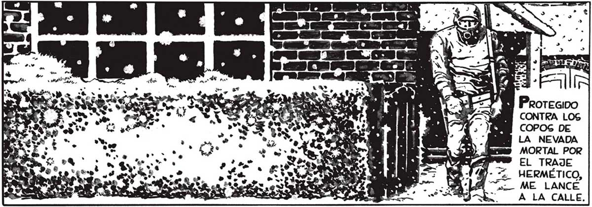
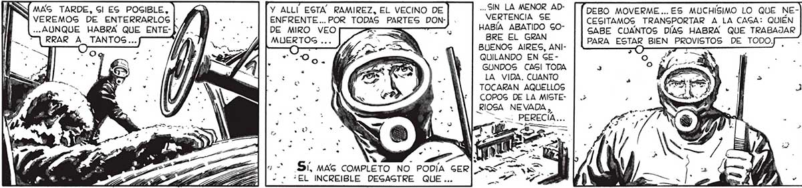
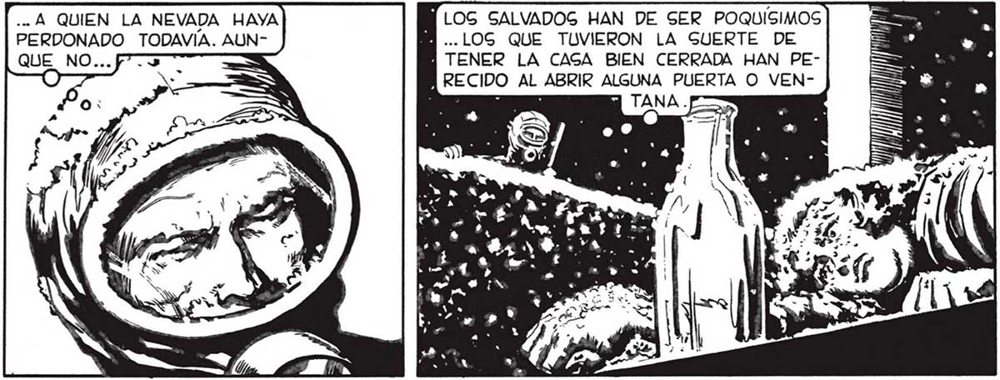

MAS TARDE, Sl ES POSIBLE, VEREMOS DE ENTERRARLOS ...AUNQUE HABRA QUE ENTEPorque EL DESAcTRE NOS HABÍA DEJADO AIGLADOS EN NUEGTRA PROPIA CAGA. Y ERA NECESARIO BUSCAR EN LOG ALMACENES, LAG FERRETERIAS, LAS FARMACIAG, LO NECESARIO PARA SEMANAS, QUIZA MESES Y MESES... Porque LA RADIO, ANTES DE ENMUDECER, HABIA DICHO QUE EL DEGACTRE GE EXTENDIA A TODO EL MUNDO... ES BUENO QUE ME APURE, Sl. PERO DE PAGO BIEN PUEDO FlJARME SI EN ALGUNA CAGA A HAY SOBREVIVIENTES. ALGUNO... Y ALLÍ ESTA RAMIREZ, EL VECINO DE ENFRENTE... POR TODAS PARTES DONDE MIRO VEO MUERTOS ... , S , 3 Sí, MAG COMPLETO NO PODÍA GER ¿EL INCREIBLE DEGAGTRE QUE... «. Á QUIEN LA NEVADA HAYA PERDONADO TODAVIA. AUN... SIN LA MENOR ADVERTENCIA SE HABIA ABATIDO GOBRE EL GRAN BUENOS AIRES, ANIQUILANDO EN GE GUNDOS CASI TODA LA VIDA. CUANTO TOCARAN AQUELLOS COPOS DE LA MISTE== ll, ALLÍ ESTABA POLGKY, MI AMIGO QUE POR CORRER A GU CAGA PARA REUNIRSE CON LOG GUYOS GE HABÍA PRECIPITADO EN MEDIO DE LA NEVADA: APENAS Gl HABIA DURADO UNOG GEGUNDOS... DEBO MOVERME... ES MUCHÍSIMO LO QUE NECESITAMOS TRANSPORTAR A LA CAGA: QUIÉN GABE CUANTOS DÍAS HABRA QUE TRABAJAR PARA ESTAR BIEN PROVISTOS DE TODO. : LOS SALVADOS HAN DE SER POQUISIMOS A ...LOS QUE TUVIERON LA GUERTE DE i TENER LA CASA BIEN CERRADA HAN PEARECIDO AL ABRIR ALGUNA PUERTA O VEN


